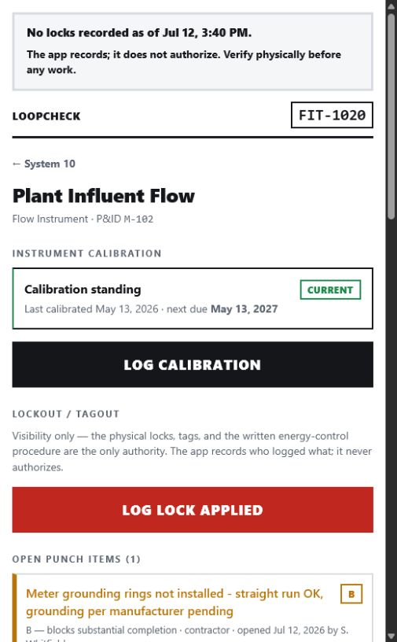
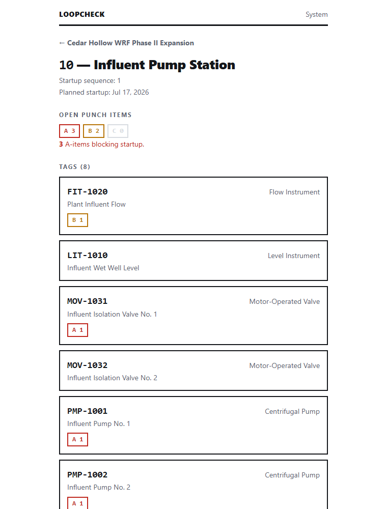
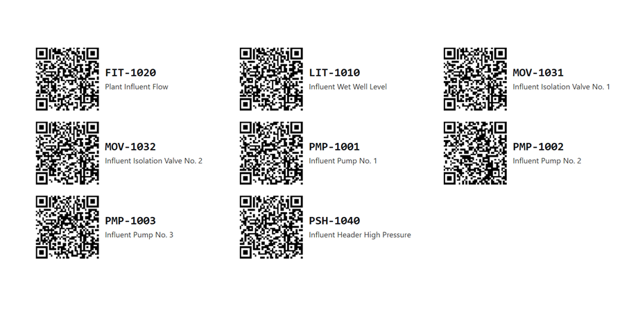
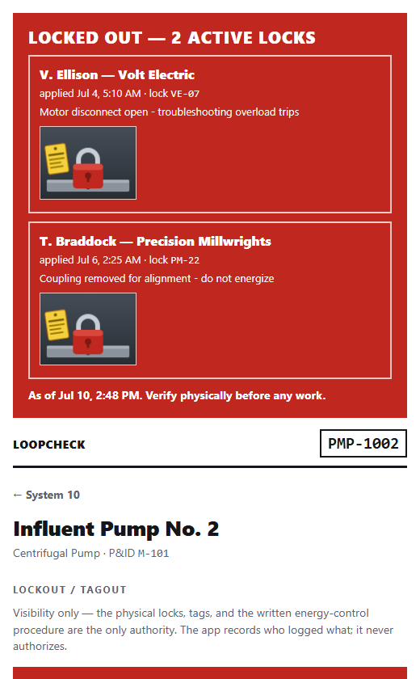

A startup & commissioning checkout tracker for treatment plants.
Every piece of equipment already wears a P&ID tag number — PMP-3101, FIT-2205, MOV-4410. LoopCheck puts a QR code on that tag. Scan it with a stock phone camera and you're looking at that equipment's status — and can flag a punch item from right where you stand. No app, no account, no training.
LoopCheck is a minimalist, self-hostable web app built by a project engineer at a water/wastewater general contractor. It answers three questions and refuses to be anything else:
- What checks has this equipment passed, and what remains before startup? Installation, point-to-point, energization, loop check, functional, performance — status derived from the record, never typed in.
-
What punch items are blocking this system?
Flagged at the equipment, with a photo, sorted by a fixed severity
language:
- A — blocks startup
- B — blocks substantial completion
- C — cosmetic, does not block
- Can we prove it? To the engineer of record, the owner, or in a dispute — with timestamped, append-only records that nobody can quietly rewrite.
It is not a forms designer, not a scheduling tool, and not a document control system.
How it works
The tag number is the URL
Each QR label encodes /t/PMP-3101 — the project's own
language, readable by a human and openable by any stock camera app.
The plain-text tag number under the QR is the fallback for what the
plant does to labels.
The checkout record is append-only
Completed checks are never edited or deleted — a correction is a new record. Status is always derived from that ledger, never stored where it can drift. That immutability is what makes the eventual turnover package trustworthy.
Your instrument index is the setup
Onboarding is a CSV import of the equipment schedule you already have. Messy headers, extra columns, and blank rows are tolerated; systems are created on the fly; you preview before anything is written. Then print QR labels on standard Avery stock and stick them on.
One binary, your hardware
The backend is PocketBase: a single executable with an embedded database. A Raspberry Pi in the commissioning trailer is enough. The frontend is plain HTML and CSS with a little vendored JavaScript — pages measured in kilobytes, no build step, no CDN.
What it looks like



Half-live plants: LOTO visibility
During commissioning some systems are energized and some are locked out, with multiple trades working around each other. Scan the thing before you touch the thing: if anyone has a lock on that equipment, a red banner tops the tag page before anything else — every active lock, who hung it, since when, why, and a photo of the lock on the isolation point. Locks and releases are permanent, append-only records (a supervisor removal carries its justification forever), and a project board lists every active lock oldest-first, so the forgotten lock on a forgotten valve is the first thing everyone sees. It is a visibility layer, never an authority: every display carries its sync time and the line "Verify physically before any work," goes amber rather than confident when data is stale, and never shows an affirmative "not locked out." The physical locks and the written energy-control procedure remain the only authority — and safety visibility is free tier, permanently.

Backward in Hand: rotation & VFD
A motor that runs backward is not necessarily wired backward. On a VFD, a drive parameter can reverse one control mode in software while the copper is fine — and a crew that "fixes" it by swapping leads at the MCC creates a real hardware fault on top of a settings mistake. So LoopCheck reads the pair: rotation in Hand and rotation in Auto. Both forward is a pass. Both reverse is hardware — swap two leads at the MCC (LOTO first). But a mismatch between the two modes is software, and the page says so while the tech is at the drive: do not swap leads — fix the VFD reference parameter. The loaded VFD parameters (max/min speed, accel and decel ramps) are recorded for the vendor's file, the whole thing is one more append-only check underneath, and a per-project rotation board prints and exports CSV for the vendor and the owner's rep. Free tier.
Calibration proves the instrument reads true
A loop check proves the signal path; an instrument calibration proves the transmitter itself reads true. LoopCheck keeps those records distinct and preserves every expected, as-found, and as-left value together. The test standard is traceable too: its model, serial number, certificate due date, and certificate attachment travel with the record. If that certificate was expired when the work was performed, capture is never blocked — the record is saved and permanently flagged red. Instrument tags show a due badge derived from the latest calibration and interval, and the project view puts overdue instruments first. Phone capture queues offline. All field capture, history, badges, and the standards registry are free core features.
After startup: warranty & closeout
Equipment lives on after commissioning — with a warranty clock, a vendor to call, and spare parts somewhere. The same QR answers those questions for the life of the plant. Because the industry's biggest warranty fight is when the clock started, LoopCheck records the basis (substantial completion, beneficial use, startup, or "X months from shipment, whichever first") and the trigger date — the expiration is always derived from them, never typed in. Closeout deliverables (O&M manuals, spares, training) are tracked per tag with an append-only status trail, warranty claims are frozen at closure, and a project dashboard shows what's still owed before final completion. Your existing closeout spreadsheet imports as CSV.
Water main jobs: service cutover
On a main replacement, the pipe is the easy part — the schedule and the angry phone calls live in the hundreds of service connections. LoopCheck tracks every address through the whole sequence: 48-hour notice, locate & pothole, new service, meter swap, tie-over (outage times recorded — the number the district asks for), and restoration. A station-ordered cutover board replaces the highlighter on the plan sheet, with every phase chip derived live from the record and a built-in early warning for services noticed but not yet tied over. Notices are logged in batch as the crew walks the block — one timestamped door-hanger photo per address, written to the same append-only ledger — so "we were never told" ends with a photograph. Customer names and phone numbers never appear on a public page, in a URL, or in a QR code; the address is the identifier, the person is not.
Where it's headed
Built today: projects, systems, tags, punch items with photos and the A/B/C punch list roll-up, CSV import, the tag and readiness pages, printable labels, a seeded checklist library for the whole checkout sequence, check execution writing the append-only ledger — with derived checkout standing, check history, a printable single-check record, and a free per-tag export — the LOTO status board, instrument calibration records, the warranty & closeout tracker, the service cutover tracker for main replacements, and a signed turnover package — build a frozen, sealed record of a system's checkout, collect signatures against it, and print it free (the two collections are still settling under a proposed contract decision). Next: the compiled, bookmarked turnover binder as the paid deliverable, then shutdown runbooks. The sequence — and where the free/paid line sits — is in the roadmap.
Run it yourself
git clone https://github.com/levelbookdev/loopcheck.git
cd loopcheck
./scripts/setup.sh # downloads the PocketBase binary for your OS
./pocketbase serve # schema + checklist library auto-apply
Then create a project, import your instrument index (a messy sample
lives in examples/), print labels, and stick them on. The
README
has the full quickstart;
ARCHITECTURE.md
explains the schema and the decisions behind it.
License
LoopCheck is AGPLv3. Self-host it, modify it, and run it for your company or your utility, free, forever. The one condition: if you offer a modified LoopCheck to others as a network service, you must publish your modifications. Office deliverables (compiled turnover packages, notifications, dashboards) are a planned paid tier run by the maintainer — the field tier is never crippled, and self-hosting remains the first-class path.